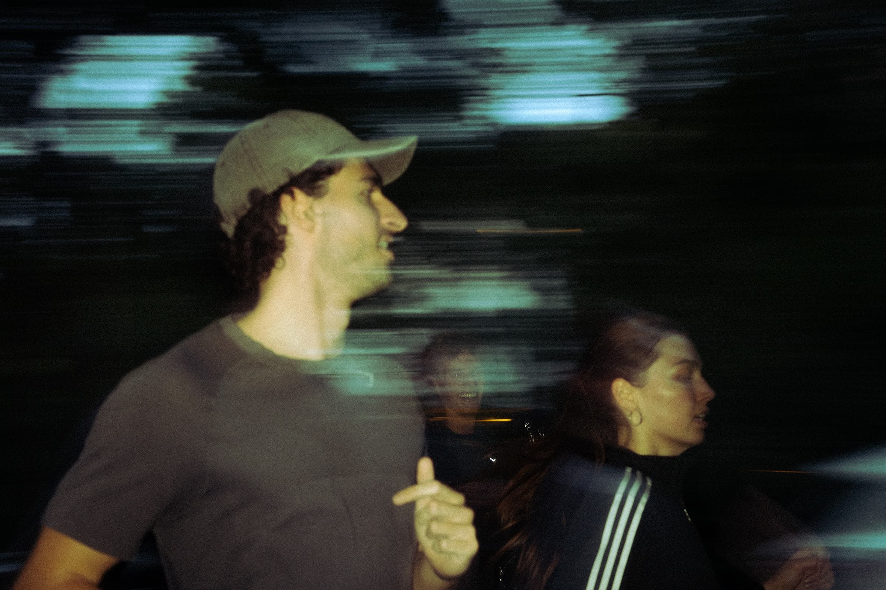
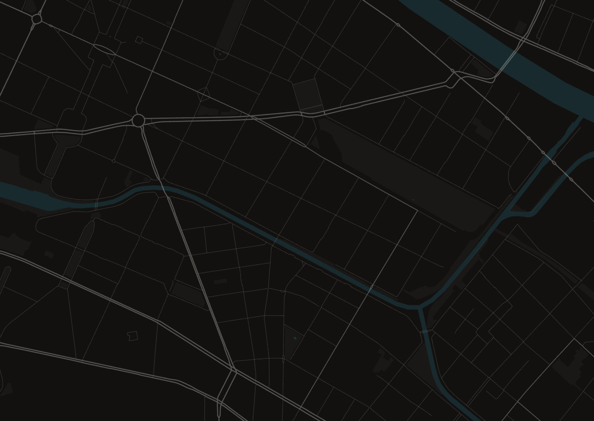
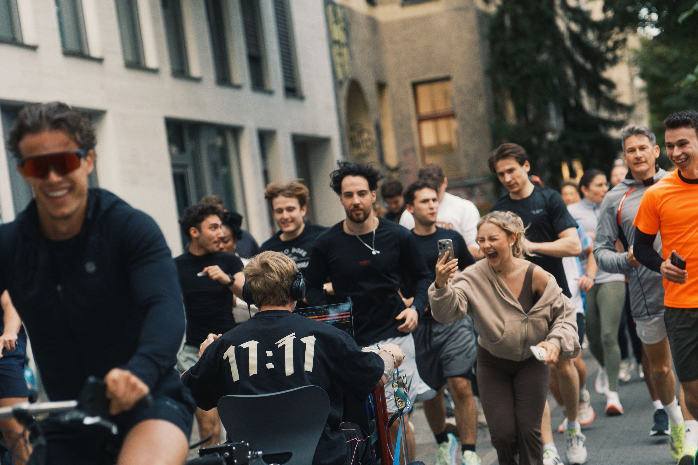
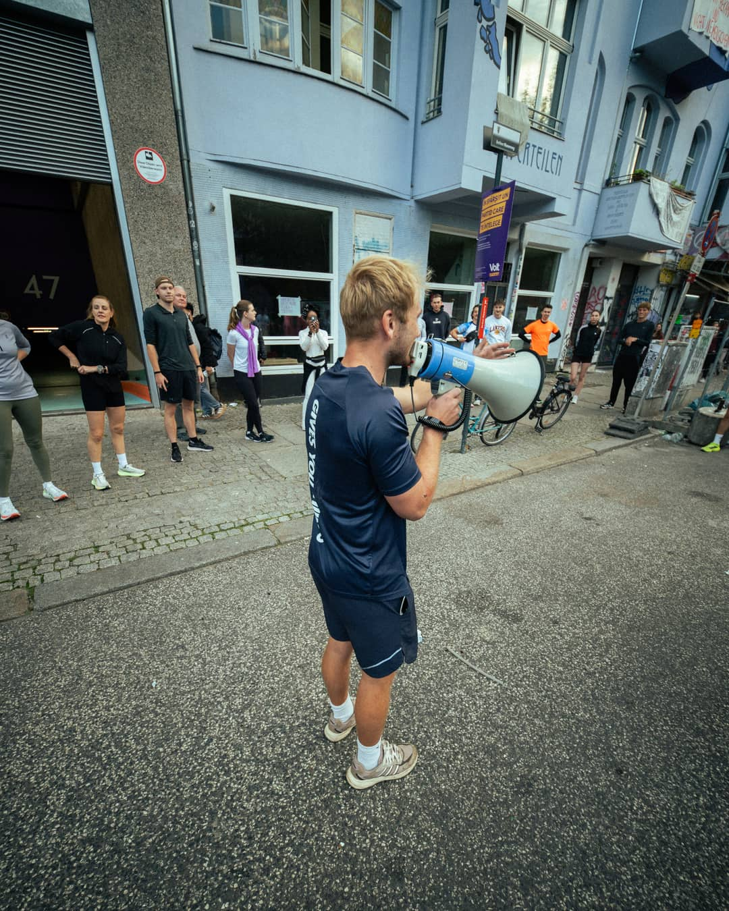
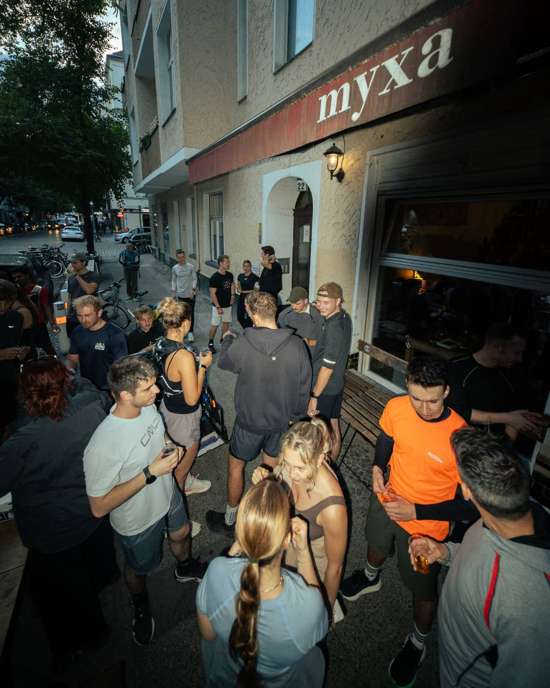
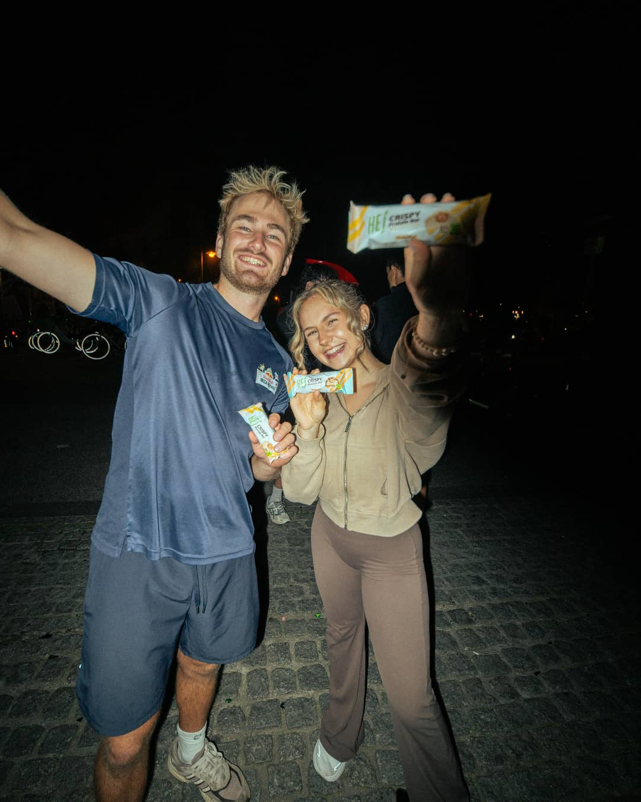

Projekt 01 · Berlin · 2026
Night Run
Ein Lauf durch die Berliner Nacht – mit DJ, Partnern, Verpflegung und Afterparty. Unser erstes eigenes Event und der Start von onside.hq.
- Wann
- 19. September 2026
- Wo
- Berlin
- Strecke
- 8 km · 3 Stopps
- Partner
- Red Bull, HEJ Natural
- Unsere Rolle
- Konzept, Organisation, Partner, Content
Die Idee
Laufen ist der Anlass.
Das Erlebnis der Grund.
Der Night Run war von Anfang an als Abend gedacht, an den man sich erinnert: die Stadt bei Nacht, ein DJ, gemeinsame Stopps und ein Ziel, an dem der Abend weitergeht. Ein Lauf, bei dem die Zeit auf der Uhr egal ist und das Gefühl danach zählt.
Die Route
8 Kilometer durch Kreuzberg und Neukölln.

Kartendaten: © OpenStreetMap-Mitwirkende (ODbL)
- 18:30 Start an der Ciao Ciao Bar
- 18:40 Myxa: Kuchen und Tee
- 19:05 Redrum Art Bar: Mocktails
- 19:35 Dietrich Bar: alkoholfreier Spritz
- 20:00 Zurück zur Ciao Ciao Bar, Afterparty
Die Umsetzung
In wenigen Wochen zum Startschuss.
In dieser Zeit ist alles entstanden, was ein Event trägt. Jeder Schritt lag in unserer Hand – genau so wollen wir weiterarbeiten.
- Idee & Konzept
- Route & Ablauf
- Partner & Sponsoren
- Verpflegung
- DJ & Afterparty
- Content vor Ort
Mit dabei
Jeder Partner hatte eine Rolle, die zu seiner Marke passt.
- Red Bull
Dosen für alle und die SoundBoks fürs DJ-Bike.
- HEJ Natural
Proteinriegel für unterwegs.
Station 1 mit Zitronen- und Bananenkuchen.
Station 2 mit Mocktails.
Station 3 mit alkoholfreiem Spritz und BRLO.
Hinter den Kulissen
Der Moment und der Plan dahinter.
Zieh den Regler: links der Abend, wie ihn alle erlebt haben, rechts unsere Planung dahinter, Schritt für Schritt.
Night Run · 19.09.2026
- Idee: Lauf, Bars, DJ
- Route & Zeitplan festgelegt
- Bars als Stationen gewonnen
- DJ + Red Bull SoundBoks
- Run-Logo & Anmeldeformular
- Armbänder & Funk vor Ort
- 18:30 Startschuss

Der Content
Der Abend als Reel.
Eindrücke
Der Abend in Bildern.









Euer Projekt